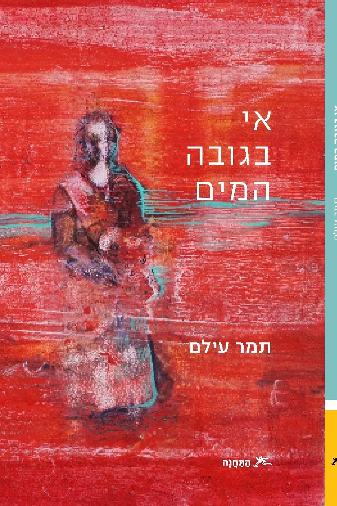

הספר עוקב אחר אסיה, גרושה טריה שלא מרצונה, אמא לאנה, וחוקרת במעבדה יוקרתית. אסיה רגילה להיות בשליטה — לדעת את התשובות, לפתור בעיות. אבל פתאום היא מוצאת את עצמה חסרת אונים: בתה החלה לפגוע בעצמה, ומערכת היחסים עם אביה של אנה מתדרדרת. במקביל, אסיה מפתחת אובססיה למשבר האקלים שמשתלט על חייה — בבית ובעבודה — בניגוד לכל מה שמצופה ממנה.
החיפוש אחר פתרונות בשני המישורים — הפרטי והגלובלי — מוביל אותה למקומות בלתי צפויים, נפשיים וממשיים כאחד.
הספר מדבר על הקשר בין אם לבתה, על פצע בין-דורי, ועל חיפוש אחר הגדרה ומשמעות. הוא ידבר אל כל מי ששואל שאלות.
רוצים לקבל עדכונים? השאירו שם ומייל.
אסיה משרכת את רגליה בכבדות בשביל הריצה במעלה נהר ההדסון לכיוון צפון. חם ולח בחוץ. אין טיפת רוח. העצים עומדים כמו פסלי אבן כבדים, לא זזים אפילו מילימטר. המים דוממים ואינם מלחכים כהרגלם את הסלעים הנושקים להם. הברווזים בנהר עומדים. איך הם עומדים ככה, בטור ישר אחד אלכסוני ומושלם? גם האוניות הגדולות, אוניות המשא, כל אחת מהן נושאת מכשירים ומנופים, בצבעי צהוב, אדום וכחול, כולן עומדות, כמו חיות פרה-היסטוריות גדולות ממדים שנשכחו שם מעידן אחר. נטושות בטח, היא חושבת. כל העובדים נטשו. מסלול הריצה נטוש. אי אפשר לנשום בכלל. חבל שיצאה. עשתה טעות. אבל היא היתה חייבת כבר לצאת משם. לנשום. אי אפשר יותר עם הלחץ הזה בבית. כלומר: עם אנה. אנה, שמסתובבת בבית כמו רוח רפאים עם גרב גזורה, בלויה, בצבע צהוב דהוי על אמת היד, המבט שלה מושפל לרצפה, לא מוציאה מילה מהפה.
את כל היום העבירה אסיה בטלפונים, מקפידה להסתגר בפרטיות חדר השינה שלה כשהיא מדברת. היא מחפשת המלצות, מתייעצת, מתחננת שלא ישימו אותה בעוד רשימת המתנה. אי אפשר לחכות עם הדבר זה, היא מסבירה. כן, היא מבינה. יש הרבה ילדים במשבר. כולם אומרים לה. בסוף היא מצליחה לדבר עם הפסיכיאטרית. דוקטור פוקס קוראים לה. היא המומלצת מספר אחת. המלצה של סוזן. סוזן נשבעה לה שהיא מכירה אישית סיפורים אחרים שבהם דוקטור פוקס הצליחה לעזור בוודאות, אפילו עשתה ניסים ממש.
כבר בטלפון אסיה הסבירה לדוקטור פוקס את הבעיה, הסבירה בקיצור ולעניין, ענתה על כל השאלות, השתדלה לשמור על קור רוח, לדבר בהיגיון, שדוקטור פוקס לא תחשוב חס וחלילה שגם לה יש בעיות. היא יודעת שאת זה הפסיכיאטרים הכי מתעבים. הם רוצים הורים שקל לעבוד איתם. נורמלים. כאלה שחושבים בהיגיון, לא מתווכחים, והכי חשוב: שומרים על קור רוח.
היא הסבירה לדוקטור פוקס שגילתה את החתכים בחופשה השנתית בישראל, בדיוק לפני שבוע ימים. איך היא גילתה? בחוף הים. לא, לפני זה היא לא ידעה. כלום. לא היה לה מושג. היא לא מבינה בדברים כאלה. זה לא התחום שלה. לא, היא בטכנולוגיה ומדע. היא אפילו לא הבינה מה זה בהתחלה. היא לא סיפרה לדוקטור פוקס שהיא נלחצה והתחילה לצעוק: אנה מה זה? מי עשה לך את זה? תגידי לי. מהר! מיד! ואנה סיננה בשקט בקול חנוק: אמא, אני צריכה אותך רגועה עכשיו. היא גם לא סיפרה לדוקטור פוקס שאנה ביקשה ממנה תרופות, כמה פעמים, אבל שאסיה לא הסכימה. בשום אופן לא, היא אמרה לה.
אסיה בכלל לא האמינה בפסיכיאטרים ובטח שלא בתרופות. הכי היא פחדה מטעויות במינון. בראש היא כבר דמיינה כל מיני תסריטים. היא מתעוררת באמצע הלילה ולוקחת בחושך את התרופה הלא נכונה. משהו שמיד הורג אותה. לא. משהו שמסמם אותה קודם, כך שהיא בכלל לא מבינה שהיא הולכת למות ושהיא צריכה לעשות משהו בנדון. ואפילו בלי טעויות מהסוג הזה, את לא באמת יודעת מה התרופות עושות לך, איך הן משחקות לך במוח, במחשבה, משנות אותה כך שאי אפשר בעצם יותר לסמוך על שיקול הדעת שלך אחרי התרופות. אי אפשר לסמוך שתעמדי על המשמר מכל צרה, שתדעי מה לעשות. אסיה גם התנגדה לכל העניין באופן עקרוני. היא האמינה בלהתמודד ראש בראש עם כל בעיה. כל בעיה אפשר לפתור עם כוח רצון והיגיון. לא לבחור בדרך הקלה. תרופות זאת הדרך הקלה. היא הרי יכולה להתחרות עם כל אחד בבעיות מהילדות, בטראומות. עם כל אחד. והנה היא פה. בניו יורק. אפילו יש לה מקצוע טוב. בקיצור: התמודדה. מה שלא הורג — מחשל, אמא שלה תמיד אומרת.
אבל מאז החתכים היא כבר לא חושבת ככה. זהו, היא נכנעה. אנה ניצחה בקרב הזה. עד עכשיו הבעיות היו קטנות, או לפחות ככה אסיה חשבה. אולי לא קטנות, אבל רגילות. היא לא התרגשה. היא לא חשבה שצריך לעשות משהו. גיל ההתבגרות. כולם הרי הזהירו אותה מראש. נכון שאנה התלוננה הרבה על המצב עם אבא שלה ועל עוד דברים. גם על בית הספר החדש שהתחילה בשנה שעברה. לפעמים היא הסתגרה בחדר שלה במשך שעות. אבל זה רגיל, אסיה חשבה. אין משפחה בלי בעיות. גיל ההתבגרות, נו. אבל עכשיו? עכשיו כבר אין בכלל שום שאלה. שום שאלה, היא אומרת בקול. מדברת לעצמה תוך כדי שהיא בוהה בברווזים שעדיין לא זזו אפילו מילימטר, כאילו תקועים בבטון, לא במים.
לא, היא גמרה אותה עכשיו עם הסיפור הזה. עכשיו היא תעשה את מה שצריך. כלומר את מה שיגידו לה המומחים. אין לה ברירה, כי כנראה שהיא באמת לא מבינה כלום. דוקטור פוקס כבר הדריכה אותה בטלפון: לבוא ל״אין-טייק״ בשבוע הבא. שעה וחצי — אנה, ואחר כך שעה וחצי — היא. תשע מאות דולר. תשלום מראש. בינתיים, לא לחכות, להחביא את כל הסכינים והמספריים. מה זאת אומרת להחביא? להחביא. למצוא מקום. לדחוף הכול בארון הבגדים למשל. די. נגמר לה האוויר. היא היתה חייבת לצאת.
נטוש כאן היום. אפילו הרצים ברמה האולימפית, עם הבגדים המבהיקים, אלה שיוצאים לרוץ גם בסערות גשמים עזות, החליטו לוותר בחום הזה. היא מכירה אחד כזה, טים. הוא גר קרוב אליה, מרחק חמש דקות הליכה. בטח גם הוא בבית עכשיו כמו כולם, במזגן. היה נחמד אם היה אפשר לעצור אצלו. הם היו מחסלים ביחד איזה בקבוק יין, שתמיד יש לו מוכן, ואז הוא היה מסתער עליה. מתחיל בפטמות, מרוכז במשימה כמו חייל בקרב. אבל אי אפשר עכשיו. בלי שטויות. באמת. כלב אחד, לבן ומלוכלך, רץ לעברה, מרחרח אותה וממשיך לרוץ צפונה. חמוד כזה, היא חושבת. איפה הבעלים שלו? היא דואגת. ננטש, אולי?
אולי היא תקשיב למשהו, אסיה חושבת. להסיח את הדעת מהבעיות. היא מחליטה להקשיב לפודקאסט ״פרֵש אֵייר״ של אֵן-פִּי-אָר. אבל היא שכחה אוזניות. לא נורא, ממילא אין כאן אף אחד. אפשר פשוט להקשיב בקול. מראיינים שם אחד, פרופסור בּלֵק, מומחה לאקלים. הקול שלו מהדהד ממנה לנהר עם הברווזים ובחזרה. הדוח — החמור מאוד, יש לציין — הוא אומר ומכחכח בגרון, של האו״ם משנת אלפיים ושמונה-עשרה, המעיט בגודל הבעיה. הם לא הביאו בחשבון את יחסי הגומלין בין המערכות הגאו-אקולוגיות השונות. למשל, מכיוון שהקרח נמס באנטארקטיקה בקצב מוגבר, לא רק שיש עכשיו פחות מה שישקף כמו מראה את קרני השמש החוצה, שלא יילכדו, אלא שגם גז פרה-היסטורי, שהיה לכוד בין השכבות, משתחרר. גז מסוג מתאן, שהוא אלים הרבה יותר מהפחמן הרגיל שאנחנו פולטים. אלים כלפי כדור הארץ, הכוונה. מי יודע מה עוד קבור שם שמשתחרר, אסיה חושבת. היא עוצרת לרגע ומתרכזת בנשימה, מסדירה את דפיקות הלב. זה כלום, היא מרגיעה את עצמה.
כלב לבן ומלוכלך רץ אליה, מרחרח לשנייה וממשיך לרוץ. עוד אחד. רץ לאותו כיוון. צפונה. אבל איך זה יכול להיות? היא ראתה כבר אחד כזה בדיוק. זה כשלעצמו אינו דבר רגיל, כלב ללא בעלים. ועכשיו שניים תאומים? אולי היא לא באמת ראתה. אולי היא מדמיינת. הזיה של חום. פתיתי שלג לבן מלוכלך בקיץ, שאינם פתיתים. שהם בכלל גיצים לבנים מהשרפה באלסקה. לא שלג, שרפה, בקיץ. מה יש לה? זה לא אלסקה כאן, זאת ניו יורק. עדיף להסתובב ולחזור הביתה. פתאום היא נתקפת בפניקה. אנה! היא מציצה בשעון. כבר כמעט שעה שהיא השאירה אותה בבית לבדה. לבדה בפעם הראשונה, מאז החתכים.
למרות החום היא רצה. היא רצה לכל אורך הנהר בחזרה, עד הגשר. מזיעה ומתנשפת, התלתלים שלה נדבקים לה למצח ומסתירים לה את הראייה. היא מסיטה אותם, מוציאה גומייה שהיתה כרוכה לה על האמה, וקושרת הכול מהר הכי טוב שהיא יכולה, לא משנה איך זה נראה עכשיו. היא עוברת מריצה להליכה מהירה, עדיין מתנשפת בכבדות. היא לא בכושר. אי אפשר בקיץ הזה. בסוף היא מגיעה לרחוב שלה, רחוב מאה ותשע מערב. עכשיו היא כבר גוררת את הרגליים. אין כוח. אישה אחת בשיער פרוע, מלא קשרים, לבושת סחבות, מסתובבת שם, ראשה רכון כלפי מטה והיא לא מרימה אותו. היא מחפשת זבל על המדרכה, שקיות נייר או קליפות, ואז נועצת בהן מקל מחודד, מנקה את הרחוב. היא מרוכזת כל כולה במעשה. כמו בשליחות דתית היא עושה את זה. אסיה כבר ראתה אותה כאן, מכירה אותה. כולם מכירים. היא לא יודעת איפה היא גרה, אם יש לה בית בכלל, אבל יום אחר יום היא כאן, ברחוב שלה, עושה את זה. גם עכשיו, למרות החום הגדול. אסיה מעולם לא נתנה עליה את דעתה.
מספיק עניינים היו לה מאז שניר עזב. אבל היום, שלא כמו בפעמים אחרות שעברה ליד האישה הזאת, הפעם היא רואה. היא עוצרת ונעמדת מולה, לוטשת עיניים, ואז היא אומרת: תודה שאת מנקה את הרחוב שלנו. האישה מרימה את הראש ונדה לה בראשה. יש לה חיוך עצוב.
אסיה מטפסת במדרגות בחופזה, רטובה מזיעה. בועה של קור מתפשטת בחלל האוויר והודפת אותה ברגע שהיא פותחת את הדלת. המזגן עובד בעוצמה ללא הפסקה. היא מוצאת את אנה באותה תנוחה כפי שעזבה אותה, על הספה, המבט שלה נעוץ באינסטגרם. גלי שיער מכסים לה את כל הפנים. קטנה כל כך, שברירית, כפופה. היא לא מרימה את המבט שלה כשאסיה נכנסת, לא מדברת, אפילו לא אומרת שלום. אסיה בולשת מסביב. ספציפית היא בוחנת את הארון, איפה שהחביאה קודם לכן את סכיני הגילוח ואת המספריים. אבל נראה ששום דבר לא זז. היא קורסת על הספה. רוצה לישון איתי היום? היא שואלת את אנה. כן, כמו בכל יום, אנה עונה.
מאז החתכים יש לאסיה סיוטים בלילות. יונה לבנה הופיעה אצלה בחלום, יונה שאליה מחוברת באזור החזה כף יד אדם קעורה, שבתוכה טמונה תינוקת זעירה, טמונה שם כמו משה בתיבה שלו, והיונה נמלטת דרך חלון מבית בוער.
קל יותר לישון באותה המיטה, כשאנה קרובה אליה. לפחות בלילה היא לא צריכה לדאוג.